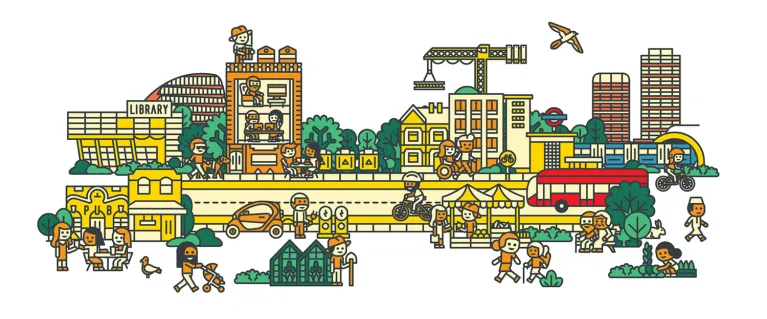

At some point, most of us learn the same ritual, when we injure ourselves.
You cut yourself. You rinse the wound. You press the plaster down. For a moment, there is relief. The blood is hidden. The pain is contained. You can carry on.
That is what makes a plaster useful.
It protects. It buys time. It stops the wound from being irritated by the outside world. It gives the body a chance to heal.
But a plaster also does something else.
It covers.
The wound is still there, but now it is easier to ignore. The visible problem has disappeared, so the deeper problem feels managed. You no longer have to look at it. You no longer have to think about it. You no longer can pick at it (guilty). You can return to your day.
Out of sight, out of mind.
That is where the metaphor begins.
Not because plasters are bad. They are not. Sometimes they are exactly what is needed. But the logic of the plaster has spread far beyond cuts and wounds. It has become a way of responding to deeper problems with solutions that are useful in the short term, but incomplete in the long term.
This is where I think about prescriptions.
To be clear, this is not an argument against medication.
Medication is one of the greatest achievements of modern society. It saves lives. It reduces suffering. It gives people time, dignity, stability, and sometimes a second chance at life. There are countless situations where a prescription is not a plaster at all. It is the correct intervention. It is necessary. It is humane.
The problem is not that we prescribe.
The problem is that prescribing is often where the system stops.
A prescription becomes a plaster when it is used as the final answer to a problem that has social, environmental, behavioural, economic, and cultural roots. That scares me.
The blood pressure comes down, but the person is still chronically stressed.
The glucose is controlled, but the food environment remains unchanged.
The symptoms soften, but the sleep, movement, work, relationships, housing, education, loneliness, and confusion that shape health are left exactly as they were.
The prescription works, but the wound remains. It lingers, it worsens and before you know it, the symptoms are back but in an exacerbrated manner.
I think about this partly because of my own time around healthcare. I saw how extraordinary medicine can be when someone is acutely unwell. When the body is in crisis, modern healthcare can feel almost miraculous. It can stabilise, rescue, repair, and relieve. I am still left in awe by modern medicine.
But I also saw how often the system meets people very late.
After the years of stress.
After the years of poor sleep.
After the years of cheap, convenient food.
After the years of inactivity.
After the years of loneliness.
After the years of not understanding what was happening inside their own body.
After the years of being told to “make lifestyle changes” without being given the time, education, confidence, money, environment, or community to actually make them. People being told, they are the problem.
Eventually, the wound shows up in the numbers.
Blood pressure. HbA1c. Cholesterol. BMI. Liver enzymes. Waist circumference. Resting heart rate.
Then the prescription arrives.
Sometimes it is necessary. Sometimes it is lifesaving. But sometimes it also marks a quiet failure of imagination. Not by the doctor. Not by the patient. But by society.
Because by the time the prescription is written, the wound has usually been forming for years.
In England, the scale of that wound is already visible. In 2024, 30% of adults were living with obesity, and 66% were either overweight or living with obesity. Mean adult BMI has risen from 25.8 in 1993 to 27.8 in 2024. Total diabetes prevalence in England was estimated at 9% in 2024, made up of 7% diagnosed diabetes and 2% undiagnosed diabetes. The inequality gradient is even more revealing: after age-standardisation, total diabetes was 14% in the most deprived areas compared with 5% in the least deprived areas.
These are not just individual failures repeated millions of times.
They are patterns. And patterns tell us something about the society producing them. So why have we decided to ignore them for so long? Is it financial reasons?
Non-communicable diseases are often described as “lifestyle diseases”, but that phrase can be misleading. It makes it sound as though people simply made poor choices in isolation. As though health is only a matter of discipline, intelligence, motivation, or willpower.
But nobody chooses their food environment as a child. Nobody chooses whether their neighbourhood is walkable. Nobody chooses whether fresh food is affordable. Nobody chooses whether their school teaches them how to cook. Nobody chooses whether work leaves them exhausted. Nobody chooses whether their culture makes movement normal. Nobody chooses whether their stress is chronic, whether their sleep is protected, whether their home feels safe, or whether they have people around them who make healthy living feel possible.
So when we reduce non-communicable disease to lifestyle, we miss the larger truth.
Lifestyle is not just personal behaviour.
Lifestyle is designed.

It is shaped by systems, defaults, incentives, education, architecture, technology, advertising, income, culture, time, work, relationships, and access. People do not simply fail to be healthy. Often, they are living inside environments that make health harder than it needs to be.
This is why the prescription alone can never be enough.
A prescription may control the numbers. It may reduce risk. It may be clinically necessary. But if it becomes the main answer, then healthcare becomes a system that helps people survive the consequences of unhealthy environments rather than helping to change those environments.
That is the plaster prescription.
Not medicine itself.
The plaster prescription is the habit of treating downstream symptoms while leaving upstream causes untouched. It is what happens when we medicate the outcome but do not redesign the conditions. It is what happens when a patient is told to eat better, move more, sleep well, reduce stress, and lose weight, but is given little education, little support, little time, little structure, and very little help navigating a world overflowing with contradictory advice.
A person can leave a GP appointment being told to lose weight, then open their phone and be told by one person to fast, another to eat six meals a day, another to avoid seed oils, another to track glucose, another to stop tracking because tracking is obsessive, another to cut carbs, another to eat more carbs, another to optimise every biomarker, and another to stop worrying because worrying is the real problem.
The modern health landscape is not simple.
It is noisy, fragmented, commercialised, and exhausting.
So people return to what is simple.
The prescription.
The number improves. The symptom reduces. The appointment ends. Everyone moves on.
But the bigger question remains: what would it look like to build a society where fewer people reached that point in the first place?
I think this is where we need to widen the conversation.
Because the issue is not just food. It is not just exercise. It is not just sleep. It is not just stress. It is not just medication. It is not just healthcare.
It is the way modern life has been built.
We did not just become unhealthy because we forgot how to eat vegetables. We became unhealthy because many of the structures that used to quietly hold people together have disappeared or weakened.
We lost community to the modern world.
We gained convenience, speed, individual freedom, remote work, delivery apps, digital entertainment, online identity, and infinite information. In many ways, that world gave us more choice than ever before.
But somewhere in that trade, a lot of people lost the ordinary structures that made life feel held: neighbourhoods, youth clubs, religious and community centres, extended family, local sports, shared meals, third spaces, intergenerational relationships, casual friendships, and places where you could belong without needing to perform.
We did not wake up one day and choose to become isolated.
The world changed around us.
Families became smaller. Work became more mobile. Neighbourhoods became more transient. More of life moved online. Convenience replaced contact. Many third spaces disappeared or became expensive. And slowly, many people found themselves surrounded by options but starved of belonging.
That is not just sad.
It is biological.
In Great Britain, almost one in four adults reported feeling lonely often, always, or some of the time in January 2026, with younger adults under 50 more likely to report loneliness than older adults. The US Surgeon General has linked poor social connection with greater risk of cardiovascular disease, dementia, stroke, depression, anxiety, and premature death; the advisory also cites evidence associating poor social relationships with a 29% higher risk of heart disease and a 32% higher risk of stroke.
This should change how we think about prevention.
Because the answer cannot simply be more advice.
People have already heard the advice. Eat better. Move more. Sleep properly. Reduce stress. Drink less. Spend less time online. See your friends. Cook from scratch. Walk more. Get sunlight. Join a gym.
The problem is not that the advice is unknown.
The problem is that modern life has made the advice difficult to live.
So the next question is not: how do we tell people to be healthier?
The better question is: how do we build a society where health happens more naturally?
This is where I think the most interesting solutions will come from. Not from things that look like traditional healthcare, but from things that look like culture.
The future of prevention will not look like healthcare.
It will look like culture.
Run clubs are a perfect example.
You see it outside cafés now. Thirty strangers stretching awkwardly before a run, pretending they are there for Zone 2 training, when really half of them are there because Wednesday night feels less lonely when someone expects them to show up.
Most people do not join a run club because they are thinking about their long-term cardiovascular risk. They join because it feels social. They want to meet people. They want a routine. They want a reason to leave the house. They want to belong somewhere. They might want new friends. They might want a new identity. They might want something to look forward to after work.
The health benefit is real, but it is not always the main selling point.
That is what makes it powerful.
It is exercise disguised as friendship.
It is prevention disguised as culture.
The same is true of hobby groups and community apps. A platform that helps people find a pottery class, a climbing group, a dinner club, a football team, a book club, or a walking group may not describe itself as healthcare. But if it gets people out of isolation, moving their bodies, learning skills, forming friendships, and building routine, then it is influencing health in a deeper way than it may realise.
This is the innovation.
Not another app that tells people they are failing.
Not another dashboard that turns the body into a spreadsheet.
Not another lecture about discipline.
We need a new category of solutions: indirect health infrastructure.
Indirect health infrastructure is anything that improves health without presenting itself as healthcare.
A run club is indirect health infrastructure.
A youth club is indirect health infrastructure.
A community kitchen is indirect health infrastructure.
A walkable neighbourhood is indirect health infrastructure.
A climbing gym is indirect health infrastructure.
A safe park is indirect health infrastructure.
A five-a-side league is indirect health infrastructure.
A supper club is indirect health infrastructure.
A third space is indirect health infrastructure.
These are not soft interventions.
They are infrastructure.
Because a society that makes people lonely, sedentary, stressed, poorly fed, sleep-deprived, and disconnected will eventually pay for those conditions through its hospitals, prescriptions, waiting lists, and chronic disease burden.
The prescription becomes the plaster at the end of the chain.
But the chain begins much earlier.
It begins in childhood, in schools, in housing, in food systems, in work culture, in urban design, in friendship, in family, in time, in money, in safety, in belonging.
A teenager with nowhere safe to go after school is not just missing entertainment. They are missing mentorship, movement, identity, routine, emotional regulation, and adults who know their name.
A tired worker ordering delivery alone after a long day is not just making a “bad food choice.” They may be living in a world where cooking feels lonely, time is scarce, stress is normal, and convenience is the only thing that reliably shows up.
A person who cannot stick to exercise may not lack discipline. They may lack a reason to leave the house that feels more meaningful than burning calories.
This is why prevention has to become more human.
Not more medical.
Not more moralistic.
More human.
We have treated prevention as information, but people experience prevention as culture.
That is the click.
It is not enough to know what is good for us. We need lives where what is good for us feels natural, social, accessible, enjoyable, and worth returning to.
That means making healthy food feel communal rather than moralistic.
It means making movement social rather than lonely.
It means making health education practical rather than confusing.
It means making prevention enjoyable rather than clinical.
It means making belonging accessible rather than accidental.
It means building spaces where people become healthier without feeling like they are constantly trying to fix themselves.
Because the truth is, a person can know exactly what they need to do and still struggle to do it alone. But place that same person inside a community where movement is normal, cooking is shared, friendships are easy, stress is softened, and belonging is available, and suddenly health becomes less of a task.
It becomes a by-product of living well.
This is the type of prevention I care about.
Not prevention as another app telling people they have failed.
Not prevention as a lecture from a system that has already made healthy living difficult.
But prevention as community.
Prevention as culture.
Prevention as the rebuilding of spaces where people can become healthier without feeling like health is another burden to carry.
We are not just trying to become healthier.
We are trying to rebuild the conditions that made health feel natural.
That is the work.
Not removing every plaster.
But finally asking why the wound keeps reopening.
originally published on substack — 2026-07-12